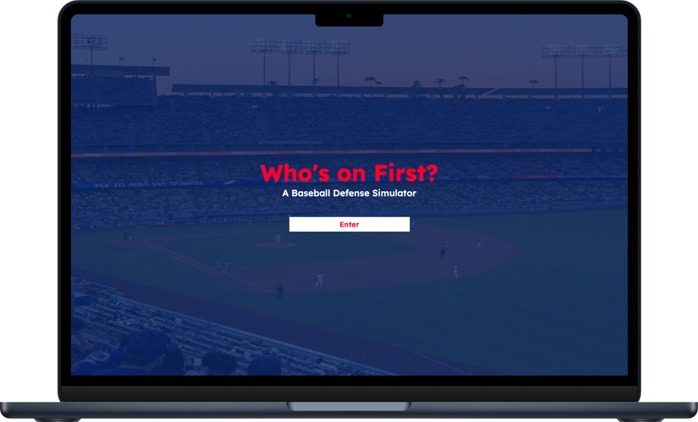
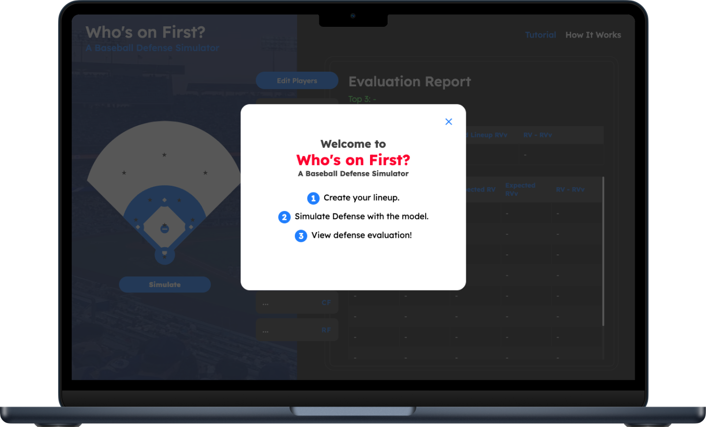
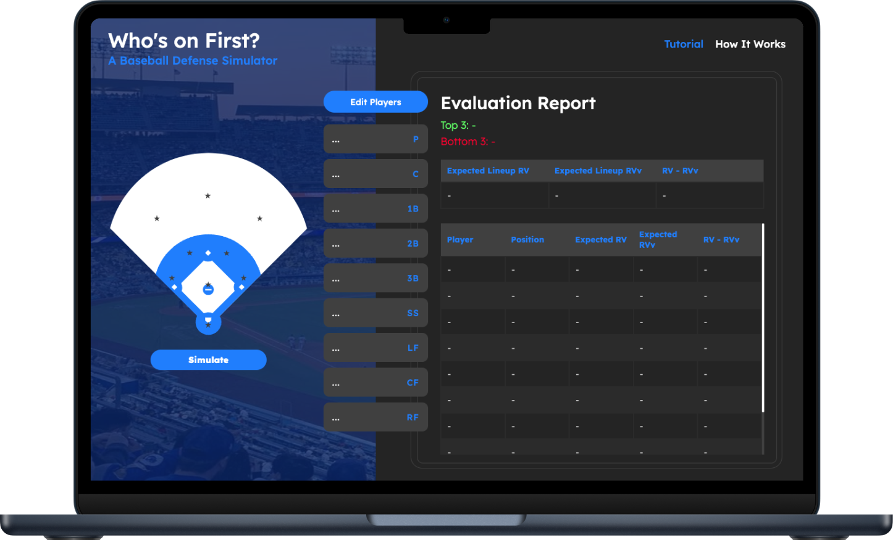
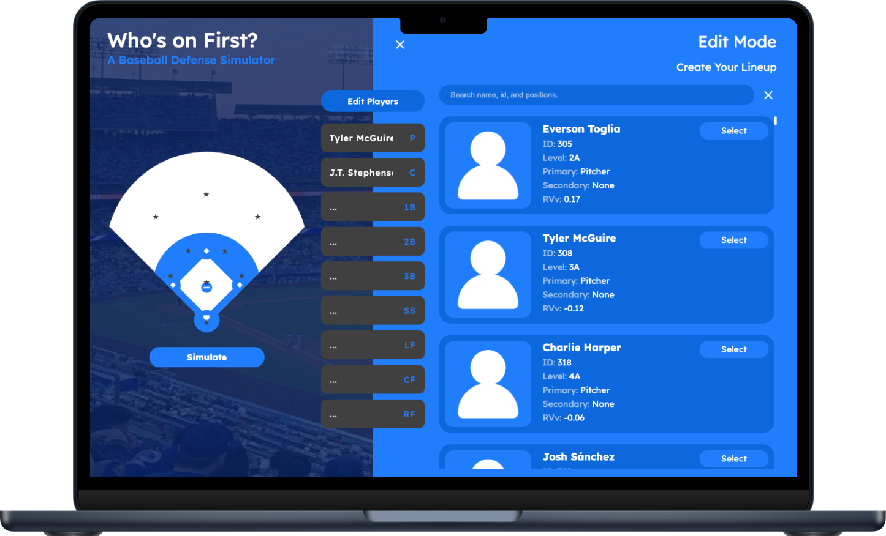
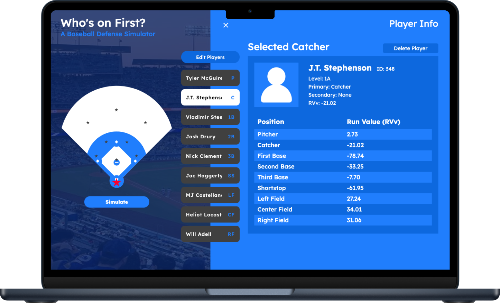

SMT Data Challenge
Who's on First?

Skills
Full Stack Development
UI Design
Duration
2 Months (2024)
The Team
2 Undergrad CS Students
Overview
Who's on First? is a baseball defense simulator web application created during the 2024 SportsMEDIA Technology (SMT) Data Challenge. Using raw data provided by SMT, our team filtered through the data and developed a model that assesses both individual and team defense. The model factors in each player's starting position and the dynamics of the entire lineup, delivering a precise and holistic evaluation.
Goal
Enables coaches, players, and teams to accurately assess their defensive performance for different lineups.
Toolkit
Programming Languages: ReactJS, Flask, Tensorflow, Pandas
Design Tools: Figma
My Role
My primary responsibilities included designing the UI, building the web application, and integrating it with the backend server and model. Additionally, I contributed to idea generation and played a significant role in delivering the final presentation.
Key Contributions:
- Designed the user interface and developed a prototype.
- Built a dynamic webpage and preprocessed user inputs before passing data to the model.
- Integrated the front-end web application with the back-end Flask server.
Brainstorming Stage
We began this project with multiple brainstorming sessions to decide on the model and application we wanted to create. After many discussions, we chose to focus on evaluating the team's defense as a whole, where each player's stats influence the performance of their teammates. We also want to create a user-friendly application for coaches, players, and teams.
Planning Stage
In order to produce a successful result, we planned out our projects and created checkpoints to keep ourselves on track. We also regularly met with SMT Data Challenge advisors to get feedback.
Below is our Minimum Viable Product. We followed this plan to stay focused, prioritize critical features, and ensure we remained on track during the limited time available for the challenge.
Our Minimum Viable Product:
- Model
- The model generates defense values influenced by the chosen players and their positions.
- Pre-processing involves rough calculations of outs and innings to train the model and calculate runs.
- Web Application
- Users can customize the team lineup with the following features:
- Add, remove, and edit players.
- Search for players to include in the lineup.
- Users can simulate the lineup using the model and view the resulting defense metrics.
- An evaluation report displays detailed defense results.
- Users can modify the lineup and resimulate, allowing for iterative improvements based on the model's feedback.
Designing Stage
Color Palette

To design a UI that users can instantly associate with baseball, I chose colors that are reminiscent of those in the Major and Minor League Baseball logos.
Typography
To prevent the page from becoming cluttered when presenting large amounts of data, I selected a simple and modern font to maintain a clean look.
Prototypes
I designed the user interface and created a prototype using Figma, which can be viewed here.
Development Stage
We utilized React to build the front-end of our web application and Flask for the back-end server.
- We chose React for the front-end due to its component-based architecture, which enabled us to build the application more quickly and efficiently.
- We used Flask for the back-end as it provided a lightweight and straightforward server to run the model.
Feature Walkthrough
*The final mockups are created using screenshots from the web applications.
Start Page
Popup Tutorial
A simple popup tutorial to get users started.
Simulation Page
A simple three-column layout featuring an interactive baseball field, player lineup, and simulation reports allows users to quickly edit the lineup, run simulations, and view reports—all on a single page.
Search for Players
Easily add or edit players in the lineup by searching for their name, ID, or positions.
View Player Stats
Easily view individual player stats by clicking on the player lineup button or the stars on the map.
Evaluation Report
After selecting a lineup and running a simulation with our model, view a comprehensive report of the lineup’s defensive evaluation.